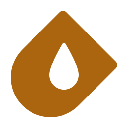

Introducing Crucible
Introducing Crucible
Crucible is an open-source application framework for operating a cyber range. Crucible aims to be both simple and powerful, highly extensible, and cost effective. Since 2018, Crucible has effectively enabled large-scale Department of Defense (DoD) cyber exercises to increase operator performance. Crucible is now available to the public under open-source licensing.
Key Features
- Open-source cyber-range application framework
- Modular design with extensive application programming interfaces
- Customizable, immersive, browser-based user interface
- “Infrastructure as code” approach to topology building—enabling scalability, iteration, and reuse
- Flexible integration of powerful, third-party, open-source tools
- Scenario-based exercising
- Efficiency through automation
- Interoperability through open standards
Addressing Persistent Challenges
Cyber range administrators confront persistent challenges: * manual configurations leads to high-labor costs and excessive human error—with limited scalability and automation * proprietary range software leads to vendor lock-in and increasing costs CMU SEI developed Crucible in response to a decade of experiencing these frictions.
Automating Cyber Experimentation and Exercise
Crucible automates creation of virtual cyber environments featuring modeled topologies, simulated user activity, and scripted scenario events. These environments power individual labs, team-based exercises, and operational experimentation. These simulations can be fully automated or facilitated. Crucible content developers create new templates by specifying a topology, scenario, assessments, and user interfaces. Participants are challenged to perform mission-essential tasks and individual qualification requirements. Each Crucible application is built using the open-source Angular and .NET Core software frameworks.
Designing User Interfaces
 Crucible’s Player application is the user’s window into the virtual environment. Player enables
assignment of team membership as well as customization of a responsive, browser-based user-interfaces using various integrated applications. A Crucible system administrator can shape how scenario information, assessments, and virtual environments are presented through the use of integrated applications.
Crucible’s Player application is the user’s window into the virtual environment. Player enables
assignment of team membership as well as customization of a responsive, browser-based user-interfaces using various integrated applications. A Crucible system administrator can shape how scenario information, assessments, and virtual environments are presented through the use of integrated applications.
Open-Source Integrations:
- osTicket, a support ticket system, manages cyber range service requests.
- Mattermost, a chat service for real-time communications.
- Rocketchat, a chat service for real-time communications.
- Roundcube, an email service, provides web-based email.
Coding a Topology

- VMware vSphere ESXi
- Microsoft Azure HyperV (public-cloud)
- Proxmox Virtual Environment KVM (open source)
Open-Source Integrations:
- OpenTofu, an “infrastructure-as-code” tool, enables scripted deployment of cyber infrastructure.
- GitLab, a version control system and code-repository, is used to store OpenTofu modules.
Crafting a Scenario
 Crucible’s Blueprint application enables the collaborative creation and visualization of a master scenario event list (MSEL) for an exercise. Scenario events are mapped to specific simulation objectives.
Crucible’s Blueprint application enables the collaborative creation and visualization of a master scenario event list (MSEL) for an exercise. Scenario events are mapped to specific simulation objectives.
 Crucible’s Steamfitter application enables the organization and execution of scenario tasks on virtual machines.
Crucible’s Steamfitter application enables the organization and execution of scenario tasks on virtual machines.
Open-Source Integrations:
- StackStorm, an event-driven automation platform, scripts scenario events and senses the virtual environment.
- Ansible, a software provisioning, configuration management, and application deployment tool, enables post-deployment provisioning of services to infrastructure.
Animating Activity
Crucible’s GHOSTS Non-Player Character (NPC) automation and orchestration framework deploys and shapes the activities of NPCs using Generative AI models.
Open-Source Integrations: * Ollama, a platform designed to run llama 2, mistral, and other open source large language models locally on your machine.
Evaluating Threats
 Crucible’s Collaborative Incident Threat Evaluator (CITE) application enables participants from different organizations to evaluate, score, and comment on cyber incidents. CITE also provides a situational awareness dashboard that allows teams to track their internal actions and roles.
Crucible’s Collaborative Incident Threat Evaluator (CITE) application enables participants from different organizations to evaluate, score, and comment on cyber incidents. CITE also provides a situational awareness dashboard that allows teams to track their internal actions and roles.
Displaying Incident Information
 Crucible’s Gallery application enables
participants to review cyber incident information based on source type (intelligence, reporting, orders, news, social media, telephone, email) categorized by critical infrastructure sector
or any other organization.
Crucible’s Gallery application enables
participants to review cyber incident information based on source type (intelligence, reporting, orders, news, social media, telephone, email) categorized by critical infrastructure sector
or any other organization.
Assessing Performance
Crucible’s SEER application enables assessment of team performance. Assessment reports map training objectives to scenario events to performance assessments.
Open-Source Integrations:
- Moodle/H5P, an interactive learning management system, eases the embedding of interactive quiz content. Assessments and other user-experience data can be recorded to a learning record store using the Experience API (xAPI).
- TheHIVE, a scalable security incident response platform, is tightly integrated with the malware information sharing platform (MISP).
Launching a Simulation
Crucible’s Alloy application enables users to launch an on-demand event or join an instance of an already-running simulation. Following the event, reports can provide a summary of knowledge and performance assessments.
Operational Deployment
Crucible applications implement the OpenID Connect authentication protocol and are integrated with Keycloak, an open-source identity authentication service. Crucible applications are deployed as Docker containers, which employ operating system level virtualization to isolate containers from each other. Container deployment, scaling, and management services are obtained using Kubernetes, a popular container-orchestration system. Kubernetes workflow and cluster management are performed using Argo, a popular open-source GitOps toolset. A pre-configured Crucible Appliance virtual machine is available for download. Beyond government-owned instances, the SEI owns and operates on-premises and cloud-based instances of Crucible:
Fortress fortress.sei.cmu.edu
Gauntlet gauntlet.sei.cmu.edu